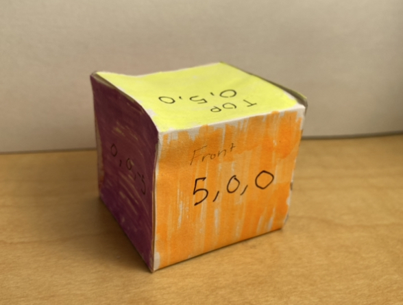

Discovery
The idea of heroes of the front came from hearing about how there are so many essential workers working during the pandemic and that they are there but unseen. In hospitials there are many people there taking care of everyone but you cannot see their faces making it hard to connect and feel comfortable in this weird isolating situation.
I wanted to highlight what these people are doing and what we can do as regular heroes to support all these front line heroes helping fight the pandemic and provide everyone with essential resources like food and medical services.
Ideation
I came up with this idea as I was thinking about what is hidden in plain sight and what is surrounding us all. We all wear masks when going out in the public to keep from spreading the virus. These masks are shields to keep our community safe and healthy. I figure what better way is there to use something that is becoming everyday and using it to help represent the bigger picture.
I wanted to use augmented reality for this piece to play on perspective to be able to play with where things are located. The masks up close are just masks but looking back with perspective you can see the bigger picture.
Prototyping
First I started with basic primitive cube shapes and placing them around the space to be able to see where things would be placed and how can I play with the space. The coordinates were a bit difficult to figure out spatially so I created a cube to see the orientations of things.

After figuring out where things would be located I placed different obj models and placed them with different orientations in unity.
Another test I added an fbx to test to see if it worked as well.
You cannot use multiple models as they do not work and the locations in unity is lost so you want to have them at different POIs.
After you download AR Poise click on the icon in the top left. A latitude and longitude textbox should pop up under the icon as shown in the screenshot below.